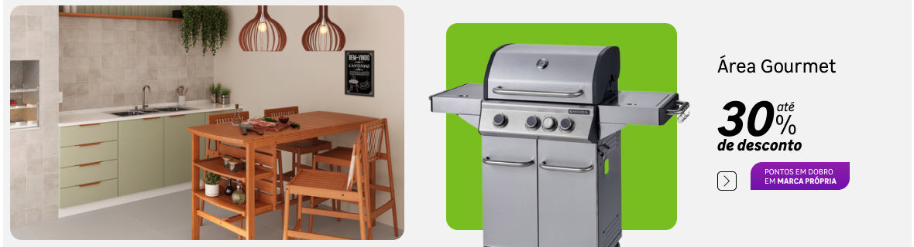
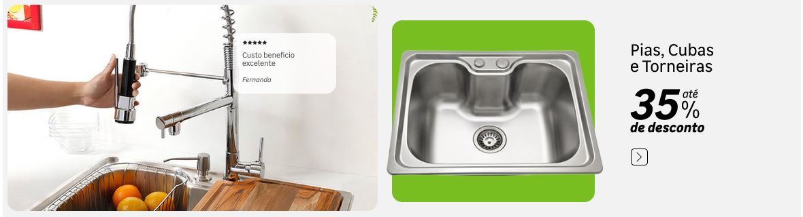
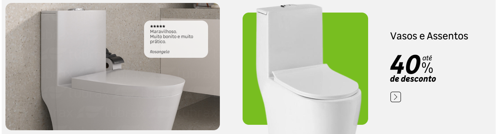

Construtora André Luiz é uma empresa especializada em soluções sólidas e confiáveis para o setor da construção civil. Com uma identidade que une tradição e eficiência, a marca carrega valores como comprometimento, qualidade e integridade, refletidos tanto em suas obras quanto no atendimento ao cliente.
O símbolo da enxada em sua logo remete à base do trabalho árduo e à fundação das grandes realizações, reforçando seu compromisso com construções bem estruturadas e com raízes firmes. A paleta de cores — vermelho e cinza — transmite energia, seriedade e profissionalismo.
A Construtora André Luiz atua em projetos residenciais, comerciais e industriais, oferecendo serviços que vão desde fundações até acabamentos, sempre com foco em durabilidade, segurança e estética. Seu estilo clássico no visual representa a confiança de quem entende do que faz e constrói pensando no futuro.